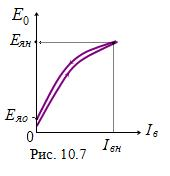

|
’арактеристика холостого хода ≈€ = f(Iв) - это зависимость Ёƒ— генератора от тока возбуждени€ при отключенной нагрузке (I = 0) и посто€нной частоте вращени€ (n = const) ротора (рис. 10.7). Ёта характеристика аналогична кривой намагничивани€ ферромагнитного материала. Ќа рис. 10.7 показаны две ветви характеристики: одна получена при увеличении тока возбуждени€, а втора€ - при уменьшении тока Iв. Ёлектродвижуща€ сила ≈€0 создаЄтс€ остаточным магнитным потоком ротора при токе Iв = 0. ’арактеристика холостого хода позвол€ет оценить степень насыщени€ магнитной цепи генератора.
|